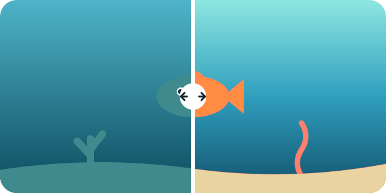

UnderBlue › 水下照片与视频拍摄指南
如何修正偏蓝、偏绿的水下照片

大多数水下照片都会偏蓝或偏绿。这很正常。光线在到达相机之前，就已经被水改变了。
本指南讲解原因，以及潜水时和潜水后该如何修正。
照片为什么会偏蓝或偏绿
水最先吸收红光，然后是橙光和黄光。蓝光和绿光传得更远。所以你潜得越深、拍摄对象离相机越远，照片就越蓝。
绿色的水里常有浮游生物或藻类。它会让色偏更绿，画面更模糊。
水中的小颗粒还会把光反射回镜头。这会显示为雾状或白色光点，叫作后向散射。
潜水时：留住更多色彩
- 靠近拍摄对象。镜头和对象之间的水越少，色彩越多。
- 尽量在浅水区拍摄。靠近水面的红光更多。
- 晴天让太阳在你身后。
- 拍近处的对象时用灯或闪光灯。把灯举到侧面，不要直射前方，以减少后向散射。
- 在浅水的蓝色水域，手机或运动相机上的红色滤镜会有帮助。
潜水后：校正色彩
大多数修图软件都能修正偏蓝或偏绿。请按这个顺序操作：
- 先调白平衡。用吸管点一下本应是白色或灰色的东西，比如沙子或气瓶。
- 如果照片还是偏蓝，就增加暖色。如果还是偏绿，就增加洋红。
- 稍微提高对比度。水会让画面显得平淡。
- 最后再加饱和度，而且只加一点。太多会让皮肤和珊瑚显得不真实。
- 如果相机支持，请拍 RAW。RAW 保留的色彩信息更多，方便后期调整。
更快的方法：用 App 修正
手动编辑可行，但每张照片都要花时间。调色 App 一步就能完成。
用 UnderBlue，你选一张照片或视频，选择风格，再与原图对比。你可以设置强度，也可以用自定义滑块微调色彩。在 Mac 上，可以一批校正整次潜水。
有些照片无法完全修正
有些照片损失太大。如果拍摄对象在浑浊的水里、离得很远，红色几乎已经消失。修图软件或 App 能改善画面，但无法让它像近距离拍的一样。下次，请靠近一些。
用 UnderBlue 校正色彩
偏蓝的照片并没有毁掉。用你自己的潜水照片试试 UnderBlue。
UnderBlue 能让你 iPhone 上的水下照片和视频恢复自然色彩。选一个效果，与原图对比，然后保存。所有处理都在 iPhone 上完成，无需账号，也不用上传。你可以免费试用。